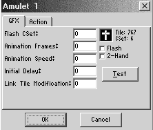
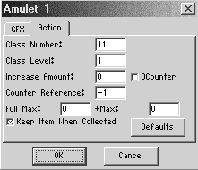

The Item Editor
The item editor is under Quest/Items. Here you can edit the properties of game items and create new ones. To edit an item, select it in the list and press edit. To create a new one, select an unused slot (z###, at the end of the list) and press edit. You can not give names to your custom items yet. You place items on a screen by pressing I and selecting them from the list.

On page 1 (GFX), you set the item's appearance.
- Flash CSet
- The CSet to use when flashing this item.
- Animation Frames
- The number of frames this item uses to animate. Set to 0 for no animation.
- Animation Speed
- How fast this item animates. Set to 0 for no animation.
- Initial Delay
- Time before animation starts.
- Link Tile Modification
- If set, all Link tiles are shifted by this value when Link picks up the item.
- Tile image
- Click here to select a new tile.
- Flash (checkbox)
- Turn flashing when Link picks up the item on or off.
- 2-Hand (checkbox)
- Link uses both hands to lift up this item.
- Test
- Test the animation.

Page 2(Action) sets what happens when Link picks up one of these. You'll use this mainly for things like keys, bombs or HCP.
- Class Number
- The item class. See the list of classes. This determines what type of item this is, for instance all swords have the same class but the boomerangs and swords have different classes.
- Class Level
- The position of this item within the class, for instance the wooden sword would be 1 and the master sword 4.
- Increase Amount
- For items like bombs, rupees or keys this tells you how much you gain. For instance, the 100-rupee item has this set to 100. Set to 0 if you don't use a counter.
- DCounter (checkbox)
- This is a technicality. Set it according to the table.
- Counter Reference
- Which counter this item uses. Set to -1 for none.
- Full Max
- The maximum of this item's type you can pick up when you have this. Set to 0 if you don't need to change the maximum. This setting is for items like quivers, purses or bomb bags which don't change the number of items (arrows) you have but the maximum you can carry.
- +Max
- How much the maximum increases. For instance, if this is a rupee purse and you set Full Max to 500, you can carry up to 500 rupees in total. If you set this to 50, you can carry 50 more than you could before.
- Keep Item when Collected
- Keep this item after getting it. You'd certainly keep the sword. you wouldn't keep rupees or hearts - when you get the item it adds one to your counter. Link doesn't go around holding a heart piece.
- Defaults
- Reset all fields on this page.
List of item classes:
List of counters:
| Counter | NameDCounter |
| #1 | #2#3 |